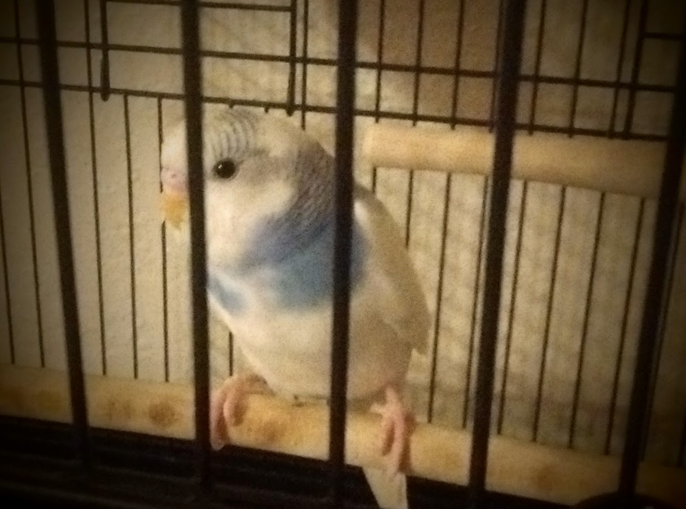

Choosing Apollo
While my sister, Laura, and her dog, Shyla, were in town for our mom’s wedding, we borrowed mom’s car to go out to find me a pet. First we went to the SPCA to try to give a home to a rescue. But they refused to split up the Bippity, Boppity, Boo brothers and the cage I had was only big enough for one. I asked the girl who was working there if she recommended any pet stores or breeders. Awkwardly she said, “Well, we don’t advertise for breeders here…”. Duh, I felt like an ass. Of course they don’t. She did say, hesitantly, that Petsmart was the store that took the best care of their budgies. She also told me to keep checking back with her because they get a lot of birds into their shelter since people don’t like how noisy budgies are.
We decided that we might as well go check out Petsmart while we had mom’s car. I figured maybe I could save a bird the trauma of having to go through multiple homes and SPCA visits before ending up with me anyway. They only had four budgies there that day. Three of them were typical variations of green factor and blue factor and were together in the same cage. Two of them were clearly a couple as they were feeding each other their regurgitated food. And the other one wasn’t doing much beside looking frumpy huddled in a corner. The fourth budgie was in his own cage because he was a mutant they labelled as “Fancy Parakeet”. When I had seen that they had this option online I thought it was kind of dumb and just wanted a nice blue one, like Blue Boy. But this little guy was pretty cute with his asymmetrical pattern and just the one “dimple”. Also he was super active, flying from his perch, to the far side of the cage, spinning on the spot in mid air, and then returning to that same perch. He did this over and over. And since he was by himself I didn’t have to worry about causing him the grief of losing a mate or a flock.
I decided to bring him home. The girl at the store asked me if I wanted her to clip his wings. I hadn’t planned on being a wing clipper, but she said she recommended it because he wasn’t tame at all and it would be safer for him. Laura agreed, reminding me that we had clipped our childhood budgies’ wings. So I said sure, though I felt bad about it since I had picked him for being such a good flyer.
He didn’t make it easy for her to catch him. After she managed it, clipped his wings, and was putting him in the box he almost escaped, but she reached out and caught him out of the air with her net, like a ninja. I thought his feistiness was a great sign, but was also feeling bad that I was the reason he was having such a traumatic day.
He didn’t make much noise in his box on the way home. For a while I wondered if he was really in there - he was Schrodinger’s budgie at that point. But Shyla got interested in the box a couple times, which incited a tiny rustle from within. Then, about halfway home, when Laura turned on the radio he started singing along! I have since learned that this little guy loves noise.
Getting him out of the box and into the cage at home was a bit of a gong show. I didn’t want to just grab him and throw him in there because I felt it would cause him even more stress. (I’m still waiting for Laura to send me the video we took, I’ll add it here when she does.) Finally he escaped the box, into the cage without incident, where he clung to the back wall silently for quite a few minutes before summoning the courage to make the leap to the nearest perch.
It took me about a week to commit to a name for my new budgie. Initially I thought I'd call him Buddy, because I'd read somewhere that "B" and "D" sounds are among the easier consonants for budgies to mimic. But then when I got him that name didn't feel right. I thought that Chris’s suggestion, Captain Bluetooth, suited him quite well and added it to the list. I also liked Ludwig, after my favourite composer, and because it's similar to Hedwig, Harry Potter's owl. Skye (after the superhero from Agents of S.H.I.E.L.D.) was also a top contender because he looks like a cloudy sky. Then it occurred to me to google sky gods, which is how I learned that Apollo was god of the sun, music, healing, truth, and was considered to be the defender of flocks. I was a little hesitant to choose this name for a day or two, because I had been rewatching Battlestar Galactica and the Apollo character on that show is kind of a knob. But after seeing that that was the name that got the most positive responses, and learning what it meant, it became clear that it was this little guy’s name.
